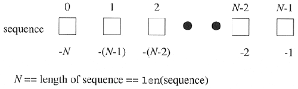
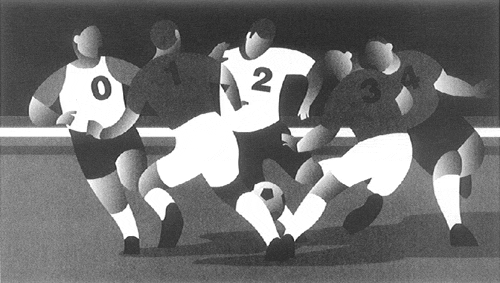
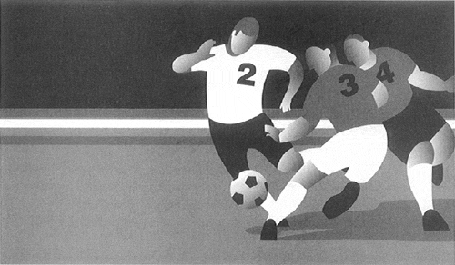

| < BACK | Make Note | Bookmark | CONTINUE > |
Sequences
Sequence types all share the same access model: ordered set with sequentially-indexed offsets to get to each element. Multiple elements may be achieved by using the slice operators which we will explore in this chapter. The numbering scheme used starts from zero (0) and ends with one less the length of the sequence—the reason for this is because we began at 0. Figure6-1 illustrates how sequence items are stored.
Figure 6.1. How Sequence Elements Are Stored and Accessed
Operators
A list of all the operators applicable to all sequence types is given in Table6.1. The operators appear in hierarchical order from highest to lowest with the levels alternating between shaded and unshaded.
| Sequence Operator | Function |
|---|---|
| seq[ind] | element located at index ind of seq |
| seq[ind1:ind2] | elements from index ind1 to ind2 of seq |
| seq * expr | seq repeated expr times |
| seq1 + seq2 | concatenates sequences seq1 and seq2 |
| obj in seq | tests if obj is a member of sequence seq |
| obj not in seq | tests if obj is not a member of sequence seq |
Membership (in, not in)
Membership test operators are used to determine whether an element is in or is a member of a sequence. For strings, this test is whether a character is in a string, and for lists and tuples, it is whether an object is an element of those sequences. The in and not in operators are Boolean in nature; they return the integer one if the membership is confirmed and zero otherwise.
The syntax for using the membership operators is as follows:
obj [ not ] in sequence
Concatenation (+)
This operation allows us to take one sequence and join it with another sequence of the same type. The syntax for using the concatenation operator is as follows:
sequence1 + sequence2
The resulting expression is a new sequence which contains the combined contents of sequences sequence1 and sequence2.
Repetition (*)
The repetition operator is useful when consecutive copies of sequence elements are desired. The syntax for using the membership operators is as follows:
sequence * copies_int
The number of copies, copies_int, must be a plain integer. It cannot even be a long. As with the concatenation operator, the object returned is newly allocated to hold the contents of the multiply-replicated objects.
Starting in Python 1.6, copies_int can also be a long.
Slices ([ ], [ : ])
Sequences are structured data types whose elements are placed sequentially in an ordered manner. This format allows for individual element access by index offset or by an index range of indices to "grab" groups of sequential elements in a sequence. This type of access is called slicing, and the slicing operators allow us to perform such access.
The syntax for accessing an individual element is:
sequence[index]
sequence is the name of the sequence and index is the offset into the sequence where the desired element is located. Index values are either positive, ranging from 0 to the length of the sequence less one, i.e., 0 <= index <= len(sequence ) -1, or negative, ranging from -1 to the negative length of the sequence, -len(sequence), i.e., -len(sequence) <= index <= -1. The difference between the positive and negative indexes is that positive indexes start from the beginning of the sequences and negative indexes begin from the end.
Accessing a group of elements is similar. Starting and ending indexes may be given, separated by a colon (:). The syntax for accessing a group of elements is:
sequence [ [starting_index]: [ending_index]]
Using this syntax, we can obtain a "slice" of elements in sequence from the starting_index up to but not including the element at the ending_index index. Both starting_index and ending_index are optional, and if not provided, the slice will go from the beginning of the sequence or until the end of the sequence, respectively.
In Figures 6-2 to 6-6, we take an entire sequence (of soccer players) of length 5, and explore how to take various slices of such a sequence.
Figure 6.2. Entire sequence: sequence or sequence [ : ]
Figure 6.3. Sequence slice: sequence [0:3] or sequence [:3]
Figure 6.4. Sequence slice: sequence [2:5] or sequence [2:]
Figure 6.5. Sequence slice: sequence [1:3]
Figure 6.6. Sequence slice: sequence [3]
We will take a closer look at slicing when we cover each sequence type.
Built-in Functions
Conversion
The list(), str(), and tuple() built-in functions are used to convert from any sequence type to another. Table 6.2 lists the sequence type conversion functions.
| Function | Operation |
|---|---|
| list (seq) | converts seq to list |
| str (obj) | converts obj to string |
| tuple (seq) | converts seq to tuple |
We use the term "convert" loosely. It does not actually convert the argument object into another type; recall that once Python objects are created, we cannot change their identity or their type. Rather, these functions just create a new sequence of the requested type, populate it with the members of the argument object, and pass that new sequence back as the return value. This follows a similar vein to the concatenation and repetition operations described in Section 6.1.1.
The str() function is most popular when converting an object into something printable and works with other types of objects, not just sequences. The list() and tuple() functions are useful to convert from one to another (lists to tuples and vice versa). However, although those functions are applicable for strings as well since strings are sequences, using tuple() and list() to turn strings into tuples or lists is not common practice.
Operational
Python provides the following operational built-in functions for sequence types (see Table 6.3).
We are now ready to take a tour through each sequence type and will start our journey by taking a look at Python strings.
| Function | Operation |
|---|---|
| len (seq) | returns length (number of items) of seq |
| max (seq) | returns "largest" element in seq |
| min (seq) | returns "smallest" element in seq |
| Last updated on 9/14/2001 Core Python Programming, © 2002 Prentice Hall PTR |
| < BACK | Make Note | Bookmark | CONTINUE > |